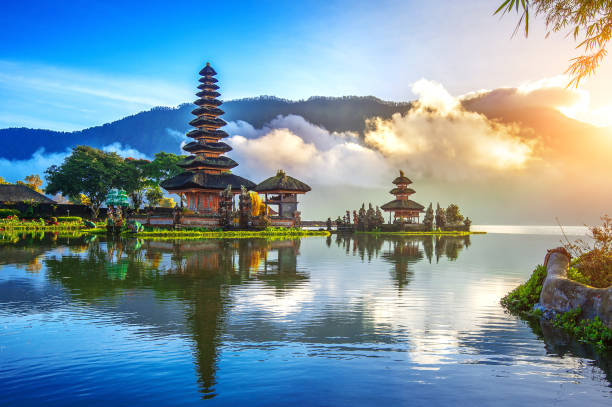

Liburan Seru di Bali
Published on: 2024-05-01 | Penulis: Sofwatul Ummah | Kategori: Wisata
Bali adalah salah satu destinasi wisata terpopuler di Indonesia. Dengan pantai yang indah, budaya yang kaya, dan tempat wisata yang eksotis, Bali tidak pernah kehilangan daya tariknya. Dalam artikel ini, kita akan mengulas beberapa tempat wajib dikunjungi saat berada di Bali...